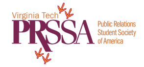

Shannon O'Dowd Portfolio
Virginia Tech Hokie | Public Relations | Health Advocate
Press Releases | Published Works | Campaign Writing | Proposals
I have written for two different sources for Virginia Tech's PRSSA. I've written for their blog and their newsletter, The Medium.
Ferguson: PR Honesty is the Best Policy - Blog Article
How PR Tactics Can Get You the Most Candy - Blog Article
(VT PRSSA) Membership Surges as PR Major Grows page 9 - Newsletter Article
Branding: Virginia Tech Dining Services page 4 - Newsletter Article
@Im_a_Hokie page 2 - Newsletter Article
 During my junior year at Virginia Tech, I accepted a position as a Department Report for the Virginia Tech Communication Department. I was responsible for following stories and writing about them for the department.
During my junior year at Virginia Tech, I accepted a position as a Department Report for the Virginia Tech Communication Department. I was responsible for following stories and writing about them for the department.
Film Involving Communication Alumnus Wins Academy Award
*Older articles have been taken down as they are dated